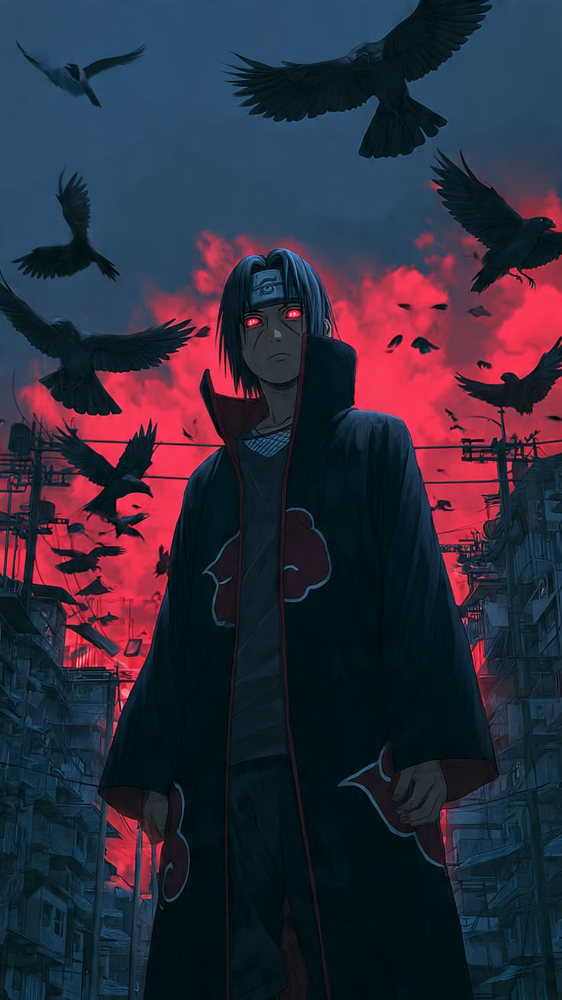

Qui est Itachi Uchiwa ?
Itachi Uchiwa est un ninja hors du commun, né au sein de l'un des clans les plus puissants de Konoha. Considéré comme un enfant prodige, il a maîtrisé le Sharingan dès l'âge de 8 ans et intégré les rangs de l'Anbu à seulement 13 ans — un exploit sans précédent dans l'histoire du village.
L'Anbu, c'est un peu l'équivalent des forces spéciales / services secrets dans le monde de Naruto. La plupart des ninja n'y arrivent jamais, même adultes. Intégrer l'Anbu à 13 ans comme Itachi l'a fait, c'est absolument exceptionnel.
- Village : Konoha (Village caché de la Feuille)
- Clan : Uchiwa
- Rang : Capitaine Anbu, puis membre de l'Akatsuki
- Spécialité : Genjutsu (illusions), Dojutsu (techniques de pupilles), Katon (élément Feu)
- Particularité : Sharingan maîtrisé à 8 ans, capitaine Anbu à 13 ans
Le Clan Uchiwa
Fondé à l’aube de Konoha, le clan Uchiwa est l’une des familles les plus anciennes et puissantes de l’histoire shinobi. Au cours des siècles, ses membres se sont opposés à l’autre grande famille fondatrice : le clan Senju.
Guerriers redoutables et fiers, les Uchiwa ont longtemps été le pilier militaire du Village Caché de la Feuille. Mais derrière leur force exceptionnelle se cache un terrible secret : plus un Uchiwa aime profondément, plus il souffre, et cette douleur éveille le pouvoir de son Sharingan.
Leur héritage
- Origine : Descendants d’Indra Ōtsutsuki, fils de l’Ermite Rikudo, ils portent en eux une puissante énergie spirituelle.
- Rôle historique : Co-fondateurs du village de Konoha aux côtés de Madara Uchiwa et Hashirama Senju.
- Police militaire : Chargés du maintien de l’ordre à l’intérieur du village grâce à leur Sharingan.
Leur chute
Progressivement mis à l’écart du pouvoir par le gouvernement de Konoha, le clan développe une rancœur grandissante. Convaincus d’être trahis, ils préparent un coup d’État. Cette menace pousse Itachi à faire un choix tragique qui scellera le destin de toute sa famille.
Son évolution
Né en pleine période de tension entre son clan et le village, Itachi grandit dans un monde marqué par la guerre et la violence. Contrairement à la plupart des ninjas, il ne voit pas dans le combat une voie de gloire, mais une souffrance à éviter.
Ses étapes clés :
- 5 ans : Témoin des horreurs de la troisième grande guerre ninja, il développe une vision pacifique du monde.
- 7 ans : Commence à maîtriser les techniques de base avec une facilité déconcertante.
- 8 ans : Éveille son Sharingan après avoir vu son ami Shisui pleurer — un événement rarissime à cet âge.
- 11 ans : Diplômé premier de sa promotion à l'académie ninja.
- 12 ans : Intègre les rangs de l'Anbu, l'unité d'élite de Konoha.
- 13 ans : Nommé capitaine Anbu — un record absolu dans l'histoire du village.
À 13 ans, Itachi est pris en étau entre deux impossibles : laisser son clan déclencher une guerre civile qui détruirait Konoha, ou l'en empêcher par tous les moyens. Manipulé par Danzô, un conseiller du village aux méthodes obscures, il choisit le sacrifice ultime : massacrer les siens pour sauver le village et son petit frère Sasuke.
Ses techniques
Itachi est l'un des utilisateurs de Sharingan les plus redoutables de l'histoire. Voici ses techniques les plus emblématiques :
- Tsukuyomi : Genjutsu ultime qui plonge la victime dans un monde illusoire contrôlé par Itachi. Le temps y est déformé — quelques secondes dans la réalité peuvent devenir des jours de torture mentale pour la cible. Seul un autre Sharingan très puissant peut en briser l'emprise.
- Amaterasu : Flammes noires invoquées par l'œil gauche d'Itachi. Ces flammes ne s'éteignent jamais d'elles-mêmes et brûlent tout ce que le regard d'Itachi fixe — y compris l'eau et la glace.
- Izanami : Technique secrète du Sharingan qui enferme la cible dans une boucle sensorielle infinie. Contrairement à l'Izanagi qui modifie la réalité, l'Izanami agit sur les perceptions. La seule sortie pour la victime est d'accepter son destin tel qu'il est.
- Susanoo : Armure géante d'énergie spirituelle qui entoure et protège son utilisateur. Le Susanoo d'Itachi est l'un des plus redoutables : il manie à la fois le Yata no Kagami (bouclier capable de parer toute attaque) et le Totsuka no Tsurugi (épée qui scelle définitivement quiconque est touché dans un genjutsu éternel).
La vérité
Pendant des années, Itachi a été considéré comme un traître et un meurtrier par tout le monde — y compris par son propre frère Sasuke, seul survivant du massacre qu'il a lui-même perpétré. C'était le prix de son sacrifice.
La vérité, révélée bien après sa mort, est tout autre : Itachi n'a jamais trahi Konoha. Il agissait en secret pour le compte du village, contraint par Danzô et les Anciens qui lui ont ordonné d'éliminer son clan pour éviter une guerre civile. Il a obéi à cet ordre impossible pour protéger deux choses : la paix du village et la vie de Sasuke.
Toute sa vie après le massacre, Itachi a joué le rôle du grand frère cruel et sans cœur pour que Sasuke le haïsse, grandisse, devienne fort — et finisse par le tuer. Il voulait que Sasuke soit l'héros qui élimine le traître, pour qu'il soit respecté et réintégré dans Konoha.
Itachi est mort face à Sasuke en feignant d'avoir perdu, en souriant une dernière fois à son petit frère, en lui disant : « Pardonne-moi, Sasuke. C'est la dernière fois. » Il est parti sans jamais révéler la vérité lui-même, laissant cette charge à Tobi.
- Rôle réel : Agent double de Konoha infiltré dans l'Akatsuki.
- But du massacre : Empêcher le coup d'état du clan Uchiwa sur ordre des Anciens.
- Raison de tout : Protéger Sasuke et assurer la paix de Konoha.
- Sa mort : Orchestrée pour que Sasuke devienne fort, face à un Itachi déjà gravement malade.
Images

Itachi, le prodige du clan Uchiwa.

Le Sharingan, attribut génétique des Uchiwa.

Le Susanoo d'Itachi, armure spirituelle ultime.